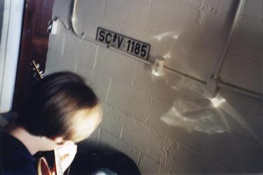

James Land

James Land is a 'solo-collaboration' based in St. Cloud, Minnesota. Main influences include Beck, Radiohead and the Beatles, and the music could be broadly described as dance-influenced folk rock.
Lyrically, there is an unapologetically inward-looking approach, attempting to ask questions without a clear answer, and allowing the process of creation to give insight. One is often surprised by what emerges as he aims to write a song.